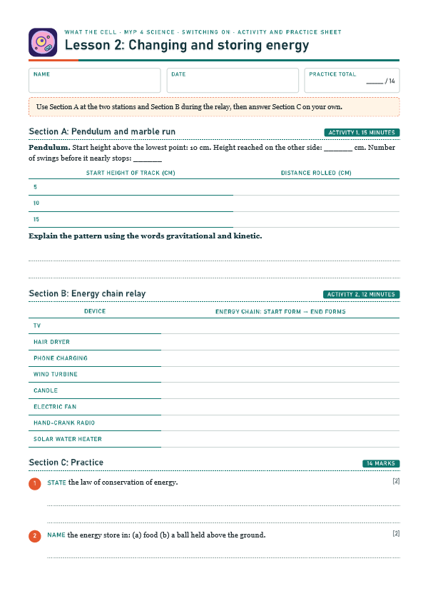

By the end of the lesson you can
- Describe energy changes with energy chains
- State the law of conservation of energy
- Explain where "lost" energy goes
- Give examples of ways to store energy
Keys: arrows or a presentation clicker move the slides, F for full screen. Slides with a red dot have a video or simulation.
Videos (all 5 minutes or less)
- 3:33
Conservation of energy
FuseSchool. While you watch: What does the law of conservation of energy say? Slide 14.
Simulations
- Lab
- PhET
Energy Skate Park: Basics
PhET, University of Colorado Boulder. Try the tasks on the simulation slide.
Print and practise

Activity and practice sheet
Used in the lesson’s activities, with practice questions. Your teacher has the answers.
Download (PDF)Lesson 2 slides
All 22 slides in one file, to read again or print. The video buttons on the slides open YouTube.
Download the slides (PDF)Revising? The Revision tab on the unit page has the unit notes and review.
Class activity pack
Everything to print for the lesson’s activities: picture cards, sorting mats, station cards with their kit lists, and the teacher’s set-up notes. Print it before class.
Download the activity pack (PDF)Notes: Changing and storing energy
energy store
A place where energy is kept, such as a battery or anything up high. For example: chemical store in a battery.
energy transfer
Energy moving from one store to another. For example: a kettle heating water.
conservation of energy
Energy cannot be made or destroyed, only changed from one form to another. For example: a pendulum swinging.
energy chain
A list showing how energy changes form, step by step. For example: chemical -> light.
dissipated
Spread out into the surroundings, usually as thermal energy. For example: a warm radiator.
useful energy
The energy that does the job we want. For example: light from a bulb.
conservation of energy
Energy cannot be created or destroyed. It can only be changed from one form to another, or moved from place to place.. For example: the total energy before = the total energy after.
dissipated
Spread out into the surroundings, mostly as thermal energy, so it is no longer useful to us. For example: the warm floor and air after the ball stops.
Key words
| energy store | where energy is kept: chemical, kinetic, gravitational, elastic, thermal, nuclear |
|---|---|
| energy transfer | energy moving between stores: by forces, electricity, heating, light, sound |
| conservation of energy | energy cannot be created or destroyed, only changed |
| energy chain | start form -> end forms |
| dissipated | spread out into the surroundings as thermal energy |
| useful energy | energy in the form we want |
| wasted energy | energy in forms we do not want, usually thermal |